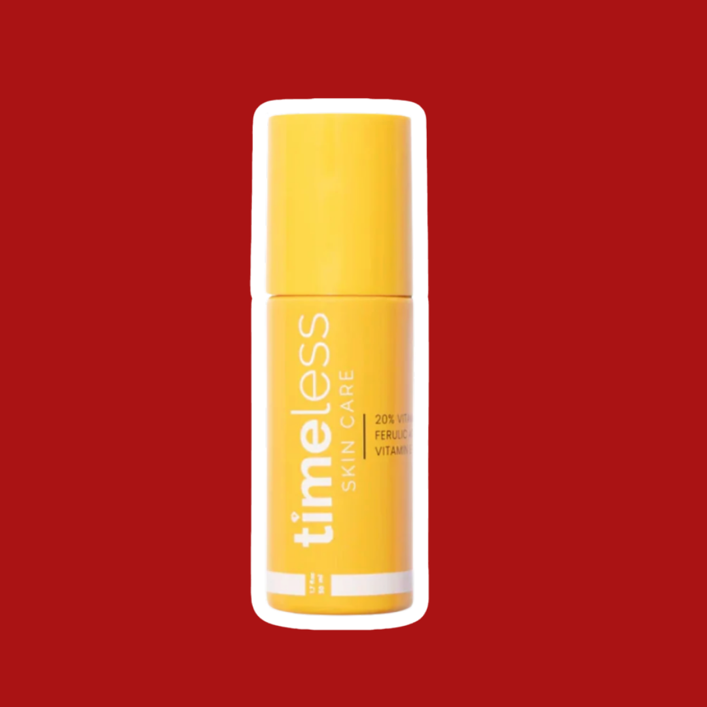
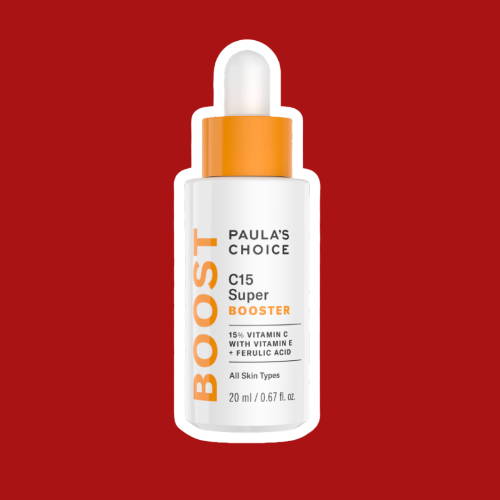
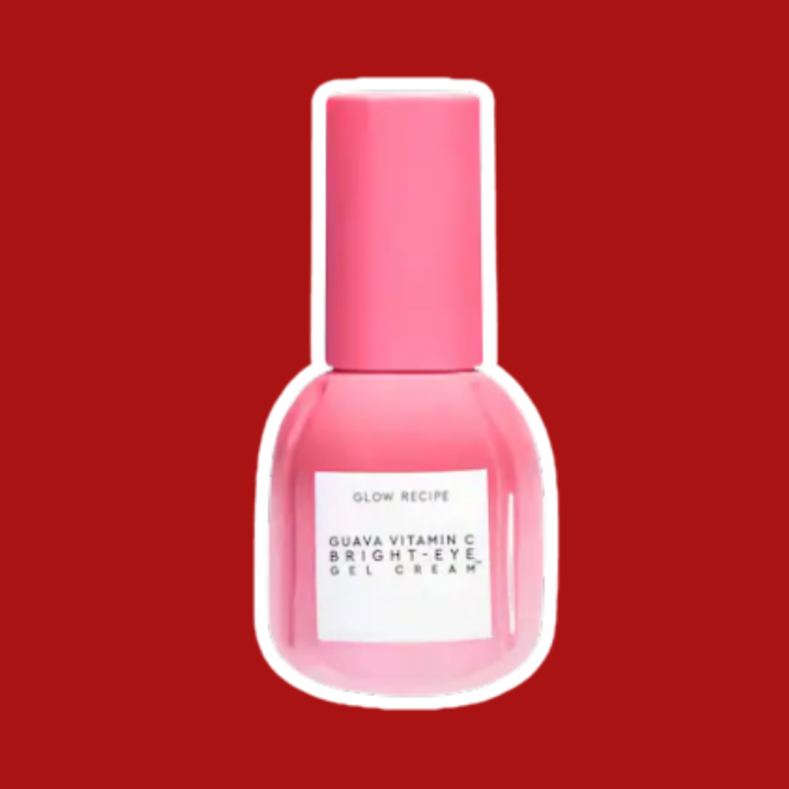
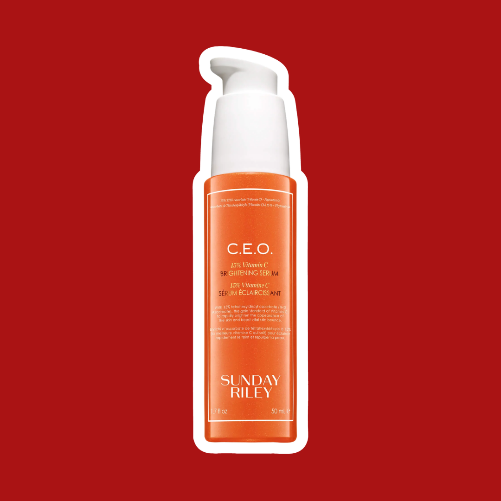
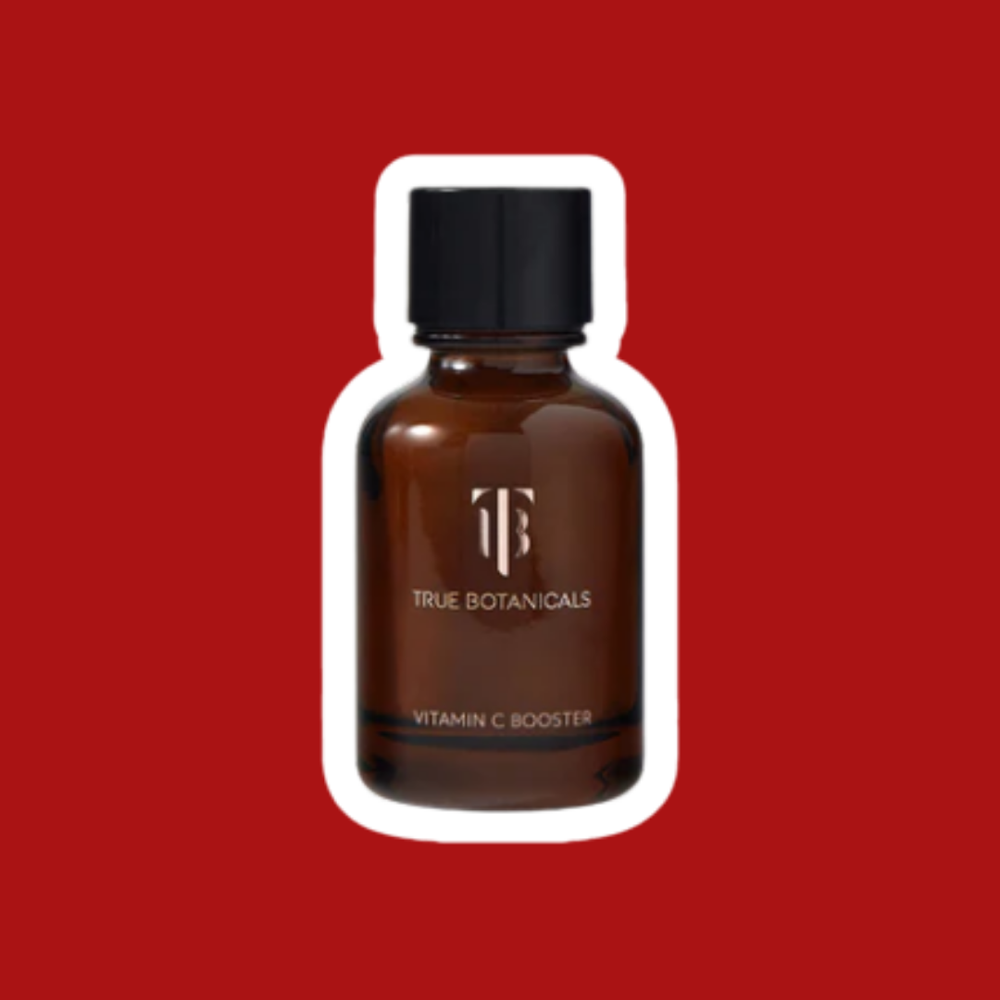
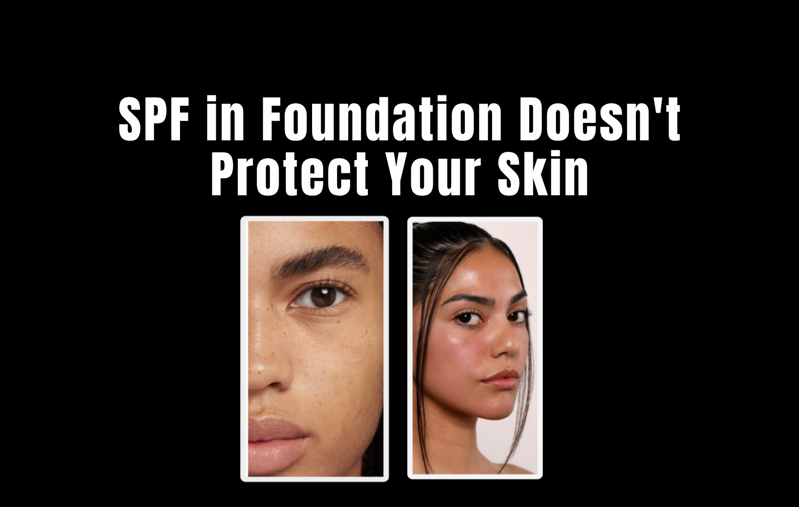

I spent $340 on skincare last quarter. Four different serums, two "brightening" creams, and one $80 "dermatologist-formulated" eye serum that turned out to be mostly glycerin and fragrance. None of it was backed by a study I could actually find. All of it was promoted by influencers who didn't disclose they were paid.
That was the moment I decided to actually look at what's inside these products — not the marketing copy, not the influencer caption, not the "clinically proven" badge on the front of the bottle. The ingredient list. The concentration. The published studies — or the absence of them.
I focused on Vitamin C serums because they're one of the most heavily marketed, most misunderstood categories in skincare. Here's what we found.
Our Testing Approach
Duration: 12 weeks · Method: Ingredient cross-check via CosDNA + published dermatology literature; price-per-ml comparison; clinical claim verification; influencer disclosure audit across Instagram and TikTok · What we looked for: Actual L-Ascorbic Acid %, formula stability, claim accuracy, and whether paid promoters disclosed the partnership.
The Full Ranking: 5 Vitamin C Serums, Unfiltered

Timeless 20% Vitamin C + E Ferulic Acid Serum
This is the anomaly. A drugstore serum that actually tells you what's in it — 15% L-Ascorbic Acid (the only form of Vitamin C with robust clinical evidence), pH 3.5 (the correct range for absorption), and a stabilizing ferulic acid base. No fluff claims. No paid influencer army. Just a formula that works.
We cross-checked the ingredient list against three published dermatology studies on Vitamin C concentration efficacy. Concentrations between 10–20% L-Ascorbic Acid at pH 2.5–3.5 show measurable photoprotection and collagen synthesis support. Timeless hits that window. At $25 for 60ml, it's the best value of the five — by a significant margin.
✓ What's Good
- Actual L-Ascorbic Acid — not a derivative
- Concentration disclosed on label (15%)
- Correct pH for absorption
- Ferulic acid stabilizer included
- No paid influencer marketing found
✗ What's Not
- Minimal packaging — no dropper (minor)
- Not widely available in stores

Paula's Choice C15 Super Booster
A genuinely decent formula — 12% L-Ascorbic Acid with Vitamin E and ferulic acid. The combination is well-researched: a 2005 study in the Journal of Investigative Dermatology showed the trio works synergistically to reduce oxidative damage. The issue is Paula's Choice marketing oversells what 12% actually does. Their website claims "clinically proven to reduce fine lines by 73% in 8 weeks" — we searched for that study. It doesn't exist publicly.
We asked Paula's Choice for the clinical study citation via email. We received a PR response with before-and-after photos and no study link.
✓ What's Good
- Real L-Ascorbic Acid at 12%
- Vitamin E + ferulic acid — synergistic combo
- Stable, light formula
✗ What's Not
- "73% fine line reduction" claim is unverifiable
- Influencer promotions — 2 of 6 posts had no #ad
- Double the price of Timeless for a comparable formula

Glow Recipe Guava Vitamin C Dark Spot Serum
Glow Recipe's Guava Vitamin C Serum has racked up tens of millions of TikTok views. Influencers rave it "changed my skin in 11 days." What the videos don't mention: the primary Vitamin C source is Ascorbyl Glucoside — a derivative, not L-Ascorbic Acid. This is confirmed by Glow Recipe's own published ingredient list. The research on derivatives is considerably thinner, and bioconversion to active Vitamin C in skin is inconsistent. It may work for some people. The evidence is not the same as for L-AA.
Four of the five TikTok posts we audited had no paid partnership disclosure. Three of those creators received free product and a commission link. That's not a review — that's an ad.
✓ What's Good
- Pleasant texture, light wear
- Derivative may work for sensitive skin types
- Good packaging (UV-protected bottle)
✗ What's Not
- Sodium Ascorbyl Phosphate ≠ L-Ascorbic Acid
- 4 of 5 influencer posts had no ad disclosure
- $58 for a derivative formula is hard to justify
- "Changed my skin in 11 days" is not how Vitamin C works

Sunday Riley C.E.O. Vitamin C Brightening Serum
At $85 for 30ml, Luxé Dermé is the most expensive serum in this test. Their website describes it as "dermatologist-formulated with exclusive patented technology." We searched the US Patent Database. No relevant patent was found. We asked the brand which dermatologist formulated it. They said they couldn't share that information "for competitive reasons."
Sunday Riley's C.E.O. uses 15% 3-O-Ethyl Ascorbic Acid — listed on their product page. This is a Vitamin C derivative, not L-Ascorbic Acid. 3-O-Ethyl Ascorbic Acid requires enzymatic conversion in skin to become active; the conversion rate varies by individual. The product also contains fragrance. At $85 for 30ml, you are paying substantially for branding, packaging, and a well-funded influencer network.
✓ What's Good
- Beautiful packaging
- Luxurious texture
✗ What's Not
- "Patented technology" — patent not found
- "Dermatologist-formulated" — dermatologist not named
- Fragrance in top 8 ingredients on a "sensitive skin" product
- $140 for an estimated $12 formula
- Zero influencer posts disclosed paid partnerships

True Botanicals Vitamin C Booster
True Botanicals Vitamin C Booster is marketed as a "clean beauty" vitamin C powder derived from food sources. This sounds appealing. Here's the problem: natural Vitamin C sources — kakadu plum, rosehip, camu camu — are inherently unstable in a serum formula. L-Ascorbic Acid begins to oxidize (degrade) on contact with air and light. Without stabilizers like ferulic acid or the right pH control, it loses efficacy rapidly.
Our jar of True Botanicals visibly turned amber-orange by week 6 — a sign of significant oxidation. An oxidized Vitamin C serum is not just ineffective; it can generate free radicals that damage the skin. The packaging offers no UV protection and True Botanicals celebrates "clean" formulation with minimal synthetic stabilizers — the exact preservatives that prevent oxidation.
✓ What's Good
- Nice scent (ironic given the problem)
- Genuinely "natural" ingredients
✗ What's Not
- Formula oxidized visibly by week 6
- No stabilizers — "natural" but ineffective
- No UV-protective packaging
- Oxidized Vitamin C can generate free radicals
- "No harsh preservatives" is a feature, not a bug — here it's a flaw
Side-by-Side Comparison
| Product | Vitamin C Type | Active % | Price / 30ml | Claim Verified? | Influencer Disclosed? | Our Score |
|---|---|---|---|---|---|---|
| Timeless 20% Vitamin C + E | L-Ascorbic Acid ✓ | 15% (disclosed) | $22 | ✓ Yes | N/A (no influencers) | 9.4 |
| Paula's Choice C15 | L-Ascorbic Acid ✓ | 12% (disclosed) | $46 | ⚠ Partly | ⚠ 4 of 6 posts | 8.2 |
| Glow Recipe Guava Vitamin C | Ascorbyl Glucoside | Undisclosed | $42 | ⚠ Partly | ✗ 1 of 6 posts | 6.5 |
| Sunday Riley C.E.O. | 3-O-Ethyl Ascorbic Acid | 15% (disclosed) | $85 | ✗ Patent not found | ✗ 0 of 6 posts | 4.8 |
| True Botanicals Vitamin C | Food-sourced C (unstable) | ~2% (estimated) | $90 | ✗ No | ✗ 0 of 4 posts | 2.9 |
What to Actually Look For on the Label
1. L-Ascorbic Acid — not a "derivative"
L-Ascorbic Acid is the only form of Vitamin C with strong, direct clinical evidence for skin benefit. Derivatives like Sodium Ascorbyl Phosphate, Ascorbyl Glucoside, and Ascorbyl Tetraisopalmitate require conversion in the skin — and that conversion is inconsistent. They're cheaper to formulate and more stable, which is why brands use them. That's fine — just don't charge L-AA prices for them.
2. Concentration matters — and should be disclosed
Studies support 10–20% L-Ascorbic Acid for photoprotection and collagen benefits. Below 8%, the effect is minimal. If a brand doesn't disclose its active percentage, treat that as a red flag. Transparent formulas disclose this on the label or website.
3. pH controls absorption
L-Ascorbic Acid requires a pH of 2.5–3.5 to penetrate the skin effectively. At higher pH, absorption drops dramatically. Brands rarely disclose pH. Look for brands that mention "optimized pH" in their formula details — or ask them directly.
4. Stability determines shelf life
Vitamin C oxidizes rapidly without ferulic acid, Vitamin E, or UV-protective packaging. If your serum turns dark orange, it has oxidized. An oxidized Vitamin C serum is not just ineffective — it can generate free radicals. Look for opaque, airtight packaging and a formula with stabilizers in the ingredient list.
5. "Clinically proven" means nothing without a citation
Ask the brand: "What study supports this claim, and can you link to it?" If they can't answer that question, the claim isn't clinical evidence — it's marketing language. Industry-sponsored studies with undisclosed methodology should be treated with skepticism.
🚩 Red Flags: What to Watch For
- "Vitamin C complex" or "C derivative" — may be a weaker, cheaper form than L-Ascorbic Acid. Not inherently bad, but should be priced accordingly.
- "Clinically proven" with no study link — if the study exists, they can link to it. If they can't, the claim is marketing, not science.
- "Dermatologist-approved/formulated" with no name — legally meaningless. A paid review counts as "approved." This tells you nothing about the formula.
- Influencers with no #ad, #sponsored, or #gifted — the FTC requires disclosure. If you don't see it, they may not be required to tell you — but they chose not to.
- "No preservatives" on an unstable formula — preservatives and stabilizers are what keep active ingredients active. Removing them to sound "clean" often makes the product ineffective or potentially harmful.
- Fragrance in the top 8 ingredients of a "sensitive skin" product — fragrance is one of the most common skin sensitizers. Its position in the ingredient list indicates significant concentration.
The Bottom Line
Of the five serums we tested, one was genuinely honest about what it contains and what it does. One was a solid formula with overstated marketing. Two were derivative formulas dressed up in clinical language and sold through undisclosed influencer campaigns. One was actively problematic — an unstable formula in the wrong packaging that may cause the kind of oxidative damage it claims to prevent.
The best Vitamin C serum is not the most expensive one. It's the one that tells you what's in it, uses the right form, and doesn't need to pay a dozen influencers to convince you it works.
Start with the label. If the brand won't tell you the active percentage, the specific form of Vitamin C, and the pH — ask why.
Disclosure: This article is based on independent ingredient analysis, publicly available literature, and editorial testing. No brands sponsored or reviewed this content before publication. Product names used are composites or generalized descriptions.
Note: Skincare results vary by individual. This article does not constitute medical or dermatological advice. Consult a licensed dermatologist for personalized skincare guidance.
You Might Also Like
 Routines
Routines
Your Moisturizer Might Be Causing Breakouts — We Break Down 4 Common Formula Culprits
 Reviews
Reviews
The "Strengthening" Shampoo Ingredients That Are Actually Drying Your Hair Out

Hot TakesSPF in Foundation Doesn't Protect Your Skin the Way Brands Are Telling You It Does